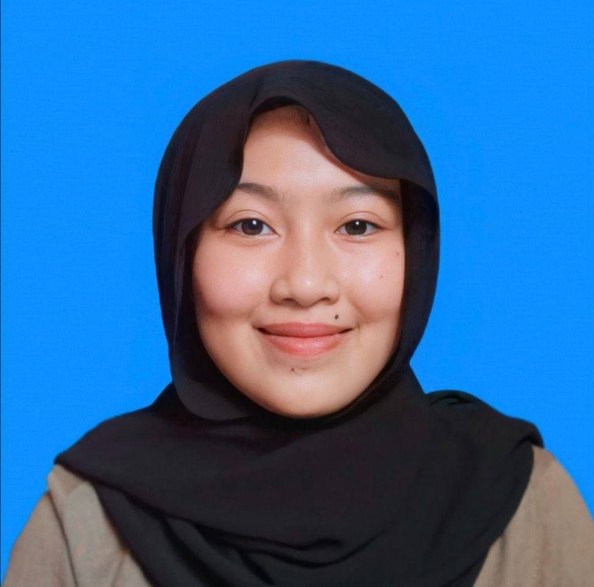

MY SISTER Jun 9, 2022
Independent sister
Now I'm going to tell you about my third sister. Her name is Nur Fatima Hanim. She is a self-sufficient and very hardworking person. She attended a mature vocational school and majored in fashion. Recently he passed the SKM test which must be taken before entering the diploma. Fatima was a spoiled man and a strong angry man. Sometimes I like to lift him up because it's fun to see her angry.

Faridah Hanum
UiTM Student